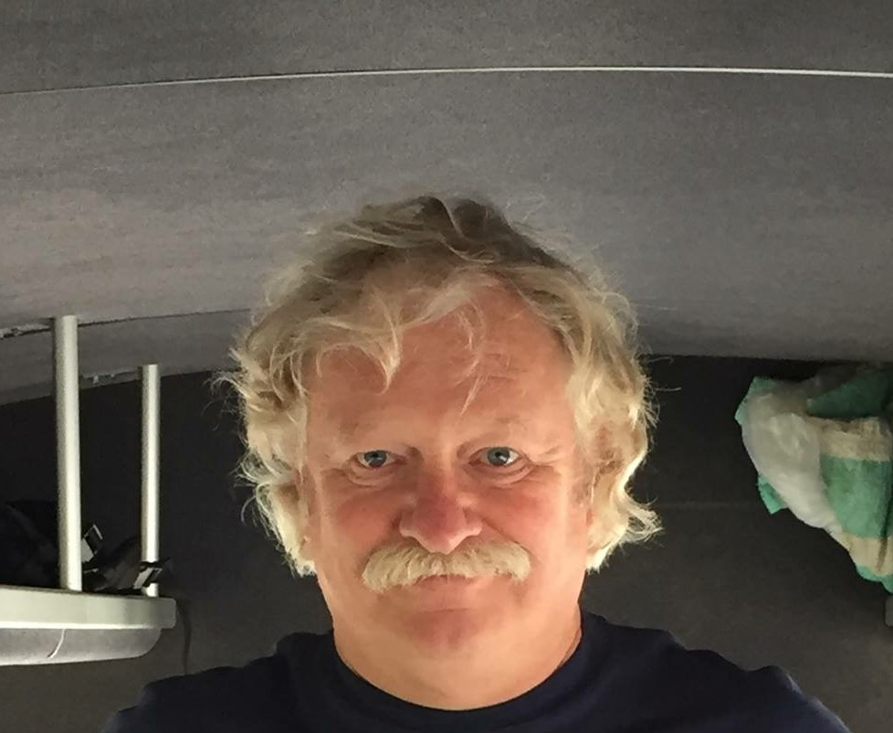

JOHN W. RENZ
Six Sigma Black Belt
johnwrenz@gmail.com 314.704.5069
Highly accomplished manufacturing and process expert with extensive
Fortune 500 management training. Strong record of new plant startups
as well as successful turnaround experience. Responsible for planning,
organizing, directing and controlling the activities of up to 11 manufacturing
sites. Proven success in marketing, supply chain, engineering and customer service.
- Coding Skills (Python, HTML and CSS)
- Lean Methods
- Multi-Site Management
- Experienced Negotiator
- Strong Business Acumen
- Relationship Management
- Strategic Planning
- HACCP / TS / ISO / cGMP
- Merger Integration
- Turnarounds / Change Management
- Strong Leadership and Vision
- High Performance Teams
- General Management / Sales / Marketing
- New Plant Startup
- Methods Expertise
- Six Sigma Black Belt
- P&L Management
- Union and Non Union Environments
LAUNCHCODE 101 - Saint Louis, Missouri.
STUDENT - July 2017 - December 2017
Intensive 20 week program to learn the skills needed for a career in technology
Python HTML CSS
RESULTS PLUS - Saint Louis, Missouri
Personal Wealth Management - 2015 to Present
MANUFACTURING OPERATIONS LEADERSHIP - Various Companies, Various Locations throughout the United States
Owens Corning, US Greenfiber, ISC Capital, Saint-Gobain, Arizon Companies, Gates Rubber
Led manufacturing operation up to 11 manufacturing sites and 1200 employees
EDUCATIONAL BACKGROUND
B.S. in Engineering - University of Missouri Rolla (Missouri University of Science and Technology)
M.A. in Management - Webster University
Six Sigma Black Belt - CPCC
Launcode 101 - Coding Skills Training